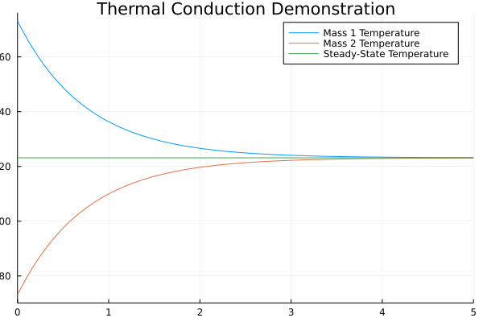

Heat Conduction Model
This example demonstrates the thermal response of two masses connected by a conducting element. The two masses have the same heat capacity but different initial temperatures (T1=100 [°C], T2=0 [°C]). The mass with the higher temperature will cool off, while the mass with the lower temperature heats up. They will each asymptotically approach the calculated temperature TfinalK that results from dividing the total initial energy in the system by the sum of the heat capacities of each element.
using ModelingToolkitStandardLibrary.Thermal, ModelingToolkit, OrdinaryDiffEq, Plots
@parameters t
C1 = 15
C2 = 15
@named mass1 = HeatCapacitor(C = C1, T = 373.15)
@named mass2 = HeatCapacitor(C = C2, T = 273.15)
@named conduction = ThermalConductor(G = 10)
@named Tsensor1 = TemperatureSensor()
@named Tsensor2 = TemperatureSensor()
connections = [
connect(mass1.port, conduction.port_a),
connect(conduction.port_b, mass2.port),
connect(mass1.port, Tsensor1.port),
connect(mass2.port, Tsensor2.port),
]
@named model = ODESystem(connections, t,
systems = [mass1, mass2, conduction, Tsensor1, Tsensor2])
sys = structural_simplify(model)
prob = ODEProblem(sys, Pair[], (0, 5.0))
sol = solve(prob, Tsit5())
T_final_K = sol[(mass1.T * C1 + mass2.T * C2) / (C1 + C2)]
plot(title = "Thermal Conduction Demonstration")
plot!(sol, idxs = [mass1.T, mass2.T], labels = ["Mass 1 Temperature" "Mass 2 Temperature"])
plot!(sol.t, T_final_K, label = "Steady-State Temperature")
savefig("thermal_plot.png");